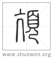

頏
亢或从頁[𩑋]。
清代 段玉裁《說文解字注》
- 人頸也。
史、漢張耳。列傳乃仰絕亢而死。韋昭曰。亢、咽也。蘇林云。肮、頸大脈也。俗所謂胡脈。𡝤敬傳。搤其亢。張晏曰。亢、喉嚨也。按釋鳥曰。亢、鳥嚨。此以人頸之偁爲鳥頸之偁也。亢之引申爲高也、舉也、當也。
- 从大省。
上<入>。
- 象頸脈形。
下冂。蘇林說與此合。古郎切。十部。按亦胡郎切。亦下浪切。俗作肮、作吭。
- 亢或从頁。
此字見於經者、邶風曰。燕燕于飛。頡之頏之。毛傳曰。飛而上曰頡。飛而下曰頏。解者不得其說。玉裁謂當作飛而下曰頡。飛而上曰頏。轉寫互譌久矣。頡與頁同音。頁古文{首+旨[左右]}飛而下如{首+旨[左右]}首然。故曰頡之。古本當作頁之。頏卽亢字。亢之引申爲高也。故曰頏之。古本當作亢之。於音尋義。斷無飛而下曰頏者。若楊雄甘泉賦。柴虒參差。魚頡而鳥胻。李善曰。頡胻、猶頡頏也。師古曰。頡胻、上下也。皆以毛詩頡頏爲訓。魚潛淵。鳥戾天。亦可證頡下頏上矣。俗本漢書胻譌从目、作䀪。集韵入諸唐韵。謂卽燕燕之頏字。俗字之不可問有如此者。楊雄解嘲。鄒衍以頡亢而取世資。漢書作亢。文𨕖作頏。正亢頏同字之證。頁部曰。頡者、直項也。亢者、人頸。然則頡亢正謂直項。淮南修務訓。王公大人有嚴志頡頏之行者。無不憛悇癢心而悅其色矣。此正用直項之訓。解嘲之頡亢、亦正謂鄒衍强項傲物而世猶師資之也。亢用字之本義。東方朔畫贊云。苟屈不可以直道也。故頡頏以傲世。亦取直項之義。